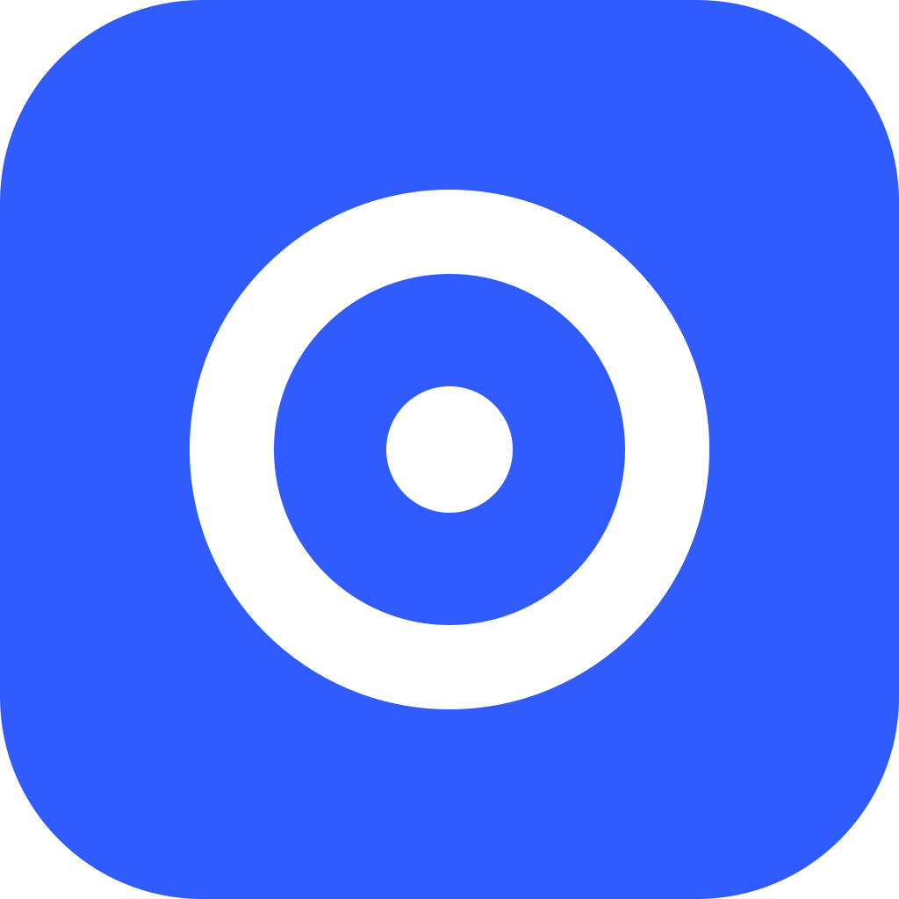

<!doctype html>
<!-- App Store screenshots: one panorama cut into 2-5 slices of 1320×2868, plus a closing card.
     Driven by Tools/make_screenshots.py, which passes the app as JSON in the hash and a slice
     index (one PNG per slice). Without a slice it shows every slice side by side, for review.
     Layout decided in #437: the icon engraving across the first seam, 3D phones, one full stop
     on the last title, closing card in brand warm black with sbu-mark.svg. -->
<html lang="it">
<head>
<meta charset="utf-8">
<title>Screenshot store</title>
<style>
  @font-face {
    font-family: "Bricolage Grotesque";
    src: url("../../Design/fonts/BricolageGrotesque-Bold.ttf") format("truetype");
    font-weight: 700 800;
  }
  /* Store screenshots are light only; values from Design/tokens.json (light), passed in. */
  * { box-sizing: border-box; }
  body { margin: 0; overflow: hidden; background: var(--sunken); }
  body.preview { overflow: auto; padding: 24px 16px; }
  .row { display: flex; gap: 14px; justify-content: center; }
  .slice { width: 1320px; height: 2868px; position: relative; overflow: hidden; flex: none; }
  .preview .slice { border-radius: 12px; }
  .pano { position: absolute; top: 0; left: 0; height: 2868px; transform-origin: 0 0;
    background: var(--surface); perspective: 4200px; }

  .t { position: absolute; top: 200px; width: 1080px; margin: 0; color: var(--ink);
    font: 800 150px/1.0 "Bricolage Grotesque", sans-serif; letter-spacing: -0.025em; text-wrap: balance; }
  .t small { display: block; margin-top: 28px; color: var(--ink-muted); letter-spacing: 0;
    font: 500 54px/1.25 -apple-system, BlinkMacSystemFont, system-ui, sans-serif; }
  .stop { display: inline-block; width: var(--mark-size); height: var(--mark-size);
    margin-inline-start: var(--mark-gap); background: var(--accent); }

  /* The real iPhone 17 Pro Max bezel (Apple Design Resources, via fastlane frameit): 1470×3000,
     screen hole 1320×2868 at 75,66. The screenshot sits in the hole, the bezel image on top, and
     copies of the bezel stacked behind give the phone its 8.75 mm of titanium side when tilted.
     The shadow lives on the wrapper: a filter on the 3D element itself would flatten it. */
  .phone { position: absolute; perspective: 4200px; filter: drop-shadow(var(--shadow)); }
  .phone.l { filter: drop-shadow(50px 70px 60px rgba(20, 24, 31, .3)); }
  .phone.r { filter: drop-shadow(-50px 70px 60px rgba(20, 24, 31, .3)); }
  .device { position: absolute; inset: 0; transform-style: preserve-3d; }
  .l .device { transform: rotateY(22deg) rotateX(6deg) rotateZ(-3deg); }
  .r .device { transform: rotateY(-22deg) rotateX(6deg) rotateZ(3deg); }
  .device img { position: absolute; display: block; }
  .device .screen { left: 5.102%; top: 2.2%; width: 89.796%; height: 95.6%; border-radius: 8% / 3.7%; }
  .device .bezel { inset: 0; width: 100%; height: 100%; }
  /* Screen and bezel share one flat layer: as two coplanar 3D planes Chrome let the screen win. */
  .face { position: absolute; inset: 0; }
  .device .side { filter: brightness(.82); }

  .engraving { position: absolute; top: 640px; width: 2200px; height: 2200px; background: var(--ink); opacity: .9; }
  .cover { position: absolute; top: 0; width: 1320px; height: 2868px; background: var(--brand); }
  .mark { position: absolute; top: 1146px; width: 576px; } /* 576px tile = 360px wordmark */
</style>
</head>
<body>
<div class="row" id="row"></div>
<script>
  const W = 1320, PHONE = 820;
  const app = JSON.parse(decodeURIComponent(location.hash.slice(1)));
  const slice = new URLSearchParams(location.search).get("slice");
  const n = app.shots.length; // 2...5
  const root = document.documentElement.style;
  for (const [k, v] of Object.entries(app.tokens)) root.setProperty(`--${k}`, v);

  // Where each phone goes: the first leans in from the left, the last stands flat, the
  // penultimate crosses the seam into the last, the others alternate their lean.
  function phone(i) {
    if (i === 0) return { x: 160, top: 950, w: PHONE, tilt: "l" };
    if (i === n - 1) return { x: i * W + 320, top: 1000, w: 860, tilt: "" };
    if (i === n - 2) return { x: i * W + 700, top: 950, w: PHONE, tilt: "r" };
    return { x: i * W + 250, top: 950, w: PHONE, tilt: i % 2 ? "r" : "l" };
  }

  // The side: bezel copies every 1.5px down to the phone's depth (8.75 mm on 77.6 mm of width).
  const BEZEL = "../../Design/devices/iphone-17-pro-max-silver.png";
  const side = w => Array.from({ length: Math.round(w * 8.75 / 77.6 / 1.5) }, (_, k) =>
    ``).join("");

  const esc = s => s.replace(/[&<>"]/g, c => `&#${c.charCodeAt(0)};`);
  const mask = `url('${app.engraving}') center / contain no-repeat`;
  const pano = `
    <div class="engraving" style="left:${W - 1100}px;-webkit-mask:${mask};mask:${mask}"></div>
    ${app.shots.map((s, i) => {
      const p = phone(i);
      return `<p class="t" style="left:${i * W + 120}px">${esc(s.title)}${i === n - 1 ? '<span class="stop"></span>' : ""}${s.subtitle ? `<small>${esc(s.subtitle)}</small>` : ""}</p>
        <div class="phone ${p.tilt}" style="left:${p.x}px;top:${p.top}px;width:${p.w}px;height:${p.w * 3000 / 1470}px"><div class="device">${side(p.w)}<div class="face"></div></div></div>`;
    }).join("")}
    <div class="cover" style="left:${n * W}px"></div>
    `;

  const indices = slice === null ? [...Array(n + 1).keys()] : [Number(slice)];
  document.getElementById("row").innerHTML = indices.map(i =>
    `<div class="slice"><div class="pano" style="width:${(n + 1) * W}px;transform:translateX(${-i * W}px)">${pano}</div></div>`
  ).join("");
  if (slice === null) {
    document.body.classList.add("preview");
    const fit = Math.min(0.25, (innerWidth - 32 - n * 14) / ((n + 1) * W));
    for (const s of document.querySelectorAll(".slice")) s.style.zoom = fit;
  }
</script>
</body>
</html>
